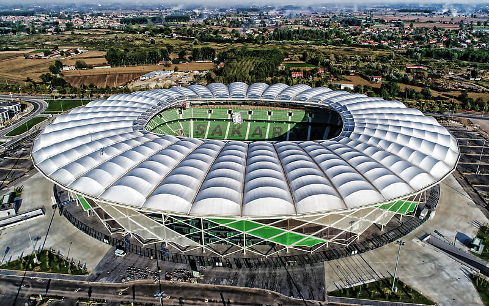

Sakarya, Türkiye'nin bir ili ve en kalabalık yirmi ikinci şehri. Aynı
zamanda 2021 yılında Danimarka'da aldığı ödül ile bisiklet şehri
ünvanını kazanmıştır. 2020 yılı sonu TÜİK verilerine göre il nüfusu:
1.042.649 dur. 16 ilçe ve belediye, bu belediyelerde toplam 668 mahalle
bulunmaktadır.
Marmara Bölgesi'nin Çatalca-Kocaeli Bölümü'nde yer alır. Sakarya'nın
kuzeyinde Karadeniz, batısında Kocaeli, Bursa, doğusunda Düzce ve
güneyinde de Bolu ile Bilecik bulunmaktadır. Sakarya Nehri, Sakarya'nın
Karasu ilçesinde Karadeniz'e dökülür.
Sakarya ekonomisinde tarımın önemli bir yeri vardır. Hendek, Karasu ve
Kocaali ilçelerinde fındık yetiştiriciliği mevcuttur. Ayrıca mısır
tarımı da yapılmaktadır. Sakarya'da sanayi son zamanlarda gelişmeye
başlamıştır. Son yıllarda kurulan sanayi kuruluşları bu sanayileşmeyi
daha da artırmıştır. Sakarya, bir milyona yaklaşan toplam nüfusuyla
İstanbul, Bursa, Kocaeli ve Balıkesir'in ardından Marmara Bölgesi'nin en
büyük beşinci şehridir.